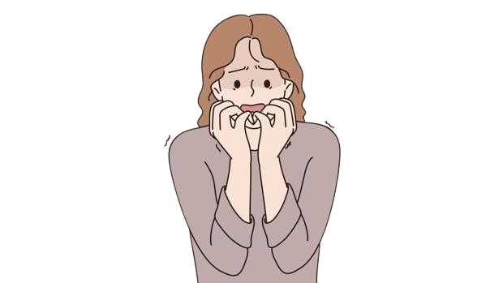

La ansiedad es un sentimiento de miedo, temor e inquietud. Puede hacer que sude, se sienta inquieto y tenso, y tener palpitaciones. Puede ser una reacción normal al estrés. Por ejemplo, puede sentirse ansioso cuando se enfrenta a un problema difícil en el trabajo, antes de tomar un examen o antes de tomar una decisión importante. Si bien la ansiedad puede ayudar a enfrentar una situación, además de darle un impulso de energía o ayudarle a concentrarse, para las personas con trastornos de ansiedad el miedo no es temporal y puede ser abrumadora.
Los trastornos de ansiedad son afecciones en las que la ansiedad no desaparece y puede empeorar con el tiempo. Los síntomas pueden interferir con las actividades diarias, como el desempeño en el trabajo, la escuela y las relaciones entre personas.
No se conoce la causa de la ansiedad. Factores como la genética, la biología y química del cerebro, el estrés y su entorno pueden tener un rol.
Los factores de riesgo para los diferentes tipos de trastornos de ansiedad pueden variar. Por ejemplo, el trastorno de ansiedad generalizada y las fobias son más comunes en las mujeres, pero la ansiedad social afecta a hombres y mujeres por igual. Existen algunos factores de riesgo generales para todos los tipos de trastornos de ansiedad, incluyendo:
Los trastornos de ansiedad pueden hacerse crónicos si persisten los acontecimientos estresantes que los han provocado o se mantienen estilos de pensamiento que ocasionan un temor a la presentación de los síntomas, creándose un círculo vicioso entre la ansiedad y el temor a presentarla.
En general, el curso es crónico con fluctaciones y en particular en el transtorno de ansiedad generalizada, trastorno obsesivo-compulsivo y trastorno fóbico de inicio en la infancia, el curso es especialmente fluctante. Sin tratamiento, el 80% siguen presentando síntomas tres años después del incio.
Si la ansiedad es crónica, pueden presentarse con frecuencia estados de depresión acompañantes. Con tratamieto, un 50% no vuelve a presentar crisis de anguistia.
Los principales tratamientos para los trastornos de ansiedad son psicoterapia(terapia de conversión) medicamentos o ambos: